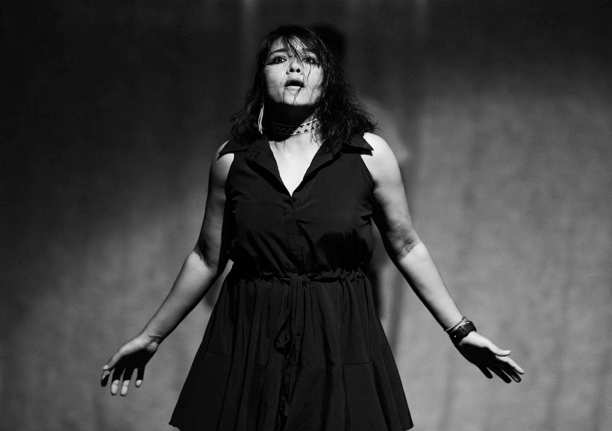

Profile
What inspires me every moment to continue working in theatre is my own birth, my identity, and the story I carry within me. I come from a village where access to basic services such as education and healthcare remains limited even today. Since childhood I have heard statements like, “Girls should not study” and “A daughter is someone who will eventually belong to another household.” Many girls continue to face the same discrimination and deeply rooted social beliefs. My experiences, my struggles and the stories of thousands of women like me inspire me to continue working in theatre, to question and to create. This is where my journey in theatre truly began.
However, this journey is not easy. Theatre in Nepal has not received proper recognition or support from the government. There is little to no government investment, and there are very few spaces for further education. Theatre continues to survive largely through the passion, dedication and personal efforts of individuals. Moreover, women’s participation in theatre remains very low. Our social and cultural structures, deeply rooted in patriarchal thinking, create numerous barriers. After marriage, many women do not even receive permission or support from their families to work outside the home. But I believe that even amidst all these challenges, hope still exists. And I see that hope in theatre.
For me, theatre and the stage are spaces where I can breathe freely, express my thoughts, ask questions and embrace my identity. Theatre has given me the courage to transform my personal experiences into stories and connect with others through those stories. I want theatre to reach people like me – people carrying thousands of stories hidden in the forgotten corners of our society. I want us to create spaces where we can listen to one another’s stories, share our joys and sorrows and find strength through our shared experiences. I want theatre to become a space where people can express themselves openly and feel truly free.
Nepal is a country rich in languages, traditions, cultures and diverse identities. Every community carries its own struggles and histories. I believe theatre has the power to bring these stories to light and connect people from different communities. However, for this to happen, theatre must reach beyond a few urban spaces and become accessible to ordinary people. This requires recognition, investment, and a genuine commitment from the government.
In the context of our society today, these dreams may seem beyond imagination. The challenges are many, and resources and opportunities are limited. But I believe that every change begins with an attempt, a story we have to reinvent. I was born into a story shaped by social restrictions, discrimination and countless expectations. But through theatre, I am now learning to rewrite my own story in a different way, which has become an even greater source of motivation.
Director
Since 2015
Stage theatre: Miss Menuka (2026), Suina (2024), Animal Imagination (2024), TAAP (2022), Bhrikuti (2017) | Forum theatre: Drishya Dhamilo (2026), Raj (2025), Anida Raat, Sisako Saharma, Alpabiram (2023) | Short film: Aakriti (2023), Dharko - A Line (2015)
Actor
Since 2013
Stage play: Lost & Found (2025), The River (2022), A Political A Sex, Tartuffe, Harjit, The Salvation, ect. | TV Series: Crime Patrol (2018) | Featire Film: Escape, Prakash, Sarank, Mitiyu (2018-2025) | Modern Dance: Pariwartan Nepal (2013), Voice Kala Hendra (2013)
Facilitator
Since 2015
Acro Theatre (2023), Acting (2023), Physical Theatre (2019), Forum Theatre (2015), Street Play (2025)
M.A. In Gender Studies
Since 2023
K and K International College
Scholarship Theatre Programme
Since 2023
The Commedia School Copenhagen
B.A. in Classical Dance
2019 - 2022
Padma Kanya Campus, Tribhuwan University

Portfolio
Miss Menuka: Ek Samvedansheel Yaunakarmi
2026 | Stage Play | Shilpee Theatre Group, Nepal
A contemporary Nepali adaptation of Jean-Paul Sartre's play La Putain Respectueuse.
Drishya Dhamilo
2026 | Forum Play | Shilpee Theatre Group, Nepal
Performance about breast cancer, in collaboration with the NGO Mokchya Nepal.
Raj
2025 | Forum Play | Dignified Menstruation
Why is menstruation still taboo? Let's break the silence.
Suina
2024 | Stage Play | Acro Theatre
We all have stories from the past, dreams and dreams of the future (Suina) in our lives. What would it be like to tell these Suinas? This play was prepared from a 3-week-Acro-Theatre workshop.
Anida Raat, Sisako Saharma, Alpabiram
2023 | Forum Theatre | Shilpee Theatre Group, Nepal
Lost & Found
2025 | Stage Play | 15 Days Nepal Tour | 40 Days Europe Tour (Germany, Sweden, Denmark)
Bhumi, a stateless tour guide, meets Sagar, a Canadian tourist of Nepali origin who is seeking peace. As she guides him through Gautam Buddha's palace, they debate Buddha's decision to abandon his wife Yashodhara and newborn son Rahul, each viewing the story through the lens of their own struggles.
The Journey of Snow on Earth
2022 | Stage Play | Shilpee Theatre Group, Nepal | Director: Yubaraj Ghimire | Performed in India, Denmark & Germany
An environmental theatrical drama that follows the interconnected stories of rivers, humans, and wildlife facing the devastating effects of climate change and environmental exploitation.
Coma - A Political A Sex, Tartuffe, Harjit, Bimoksha (The Salvation), Majipa Lakhe, Samaj Ka Naikya (Pillar of Society), Lato Pahad, Chirieka Saajh Haru, Dikshanta, Pahuna Ghar Ki Shauni, Ani Deurali Runcha, Sakhi, Yayati, I am Not Sorry, Munamadan, Aandhi Ko Manoram Nritya, Chha Patra Ko Ekaalaap, Ainaa, Anupasthit Teen (NO EXIT)
2014 – 2024 | Stage Plays | Shilpee Theatre Group, Nepal
Sana Sana Sapna, Alikati Ujyalo, Naari, K Lagyoe Halkale, Kalpana ra Urmila Dhukma Xhan, Tripal, Big Fish, Small Fish etc. Anida Raat, Satata Paata
2018 – 2025 | Forum Theatre | Shilpee Theatre Group, Nepal
Short Film: Please Don't Ask | Feature Film: Escape, Prakash, Sarank, Mitjyu
2018 – 2025 | Short and Feature Films | Directors: Ghimire Yubaraj, Ananta Ghimire, Dinesh Raut, Birendra Hamal, Anil Buda Magar
Ghaito Ma Gham Lagyo
2015 | Street Play | Directors: Mukunda Khatiwoda, Asuthosh Kala Samuha
Pariwartan Nepal (5 shows) | Voice Kala Kendra (6 shows)
2013 | Modern Dance
Acro Theatre / Body & Movement
2023 – 2026 | 15 days each
Mandala Theatre, Ek Theatre, Oscar International College, Nepal
Forum Theatre / Street Theatre
2015 – 2026 | 10 / 15 days each
across Nepal
Acting
2023 | 1 month
Oscar International College, Nepal
Physical Theatre
2023 | 10 days
Ek Theatre, Nepal
Physical Theatre
2019 | 20 days
Bhopal, India
Street Play
2015 | 10 days
Saptari Nepal
Clown
2026 | 6 days
Signe Gravlund Thomsen (Denmark)
Live Radio Drama
2026 | 10 days
Philipp Neuweiler (Germany)
Physical Theatre
2023 | 3 months
The Commedia School Copenhagen
Theatre-in-Education
2019 | 20 days
Bhopal, India
National Dance Director
2019 | 5 days
Cultural Cooperation and Anushilan Kala Paathshala
Forum Theatre Workshop
2019 | 10 days
Trainer: Brethey, Denmark
Theatre Technical
2019 | 7 days
Rastriya Naach Ghar, Trainer: Raj Kumar Pudasaini
Women Filmmaking (Her Story)
2018 | 7 days
Accountability Lab & Onion Films
Buffon
2018 | 15 days
Trainers: Shiva Grings, Anita Berlatumi (Germany)
Physical Theatre
2018 | 7 days
Trainer: Lima Rood (Netherland)
Film Script Writing
2018 | 10 days
NFCA, Trainers: Rabin Bhatt, Jeff Monahan
Creative Play Writing
2018 | 10 days
Rastriya Naach Ghar, Trainers: Ashesh Malla, Birendra Hamal, Subarna Thapa
Intensive Film Script Writing
2018 | 15 days
Trainer: Abinash Bikram Shah
Clown Workshop
2017 | 7 days
Trainers: Shiva Grings, Anita Berlatumi & Anita Fricker (Germany)
Storytelling Theatre
2014 | 3 months
Shilpee Theatre Group
Modern Dance
2014 | 1 year
Trainer: Rajdhani Kala Kendra
Ramp Walk
2013 | 25 days
Next Model Management, Trainer: Niranjan Thapa
Nepali Folk Dance
2013 | 6 months
Trainer: Rajshree Kala Kendra
Acting
2013 | 3 months
M.ART Theatre, Trainer: Birendra Hamal